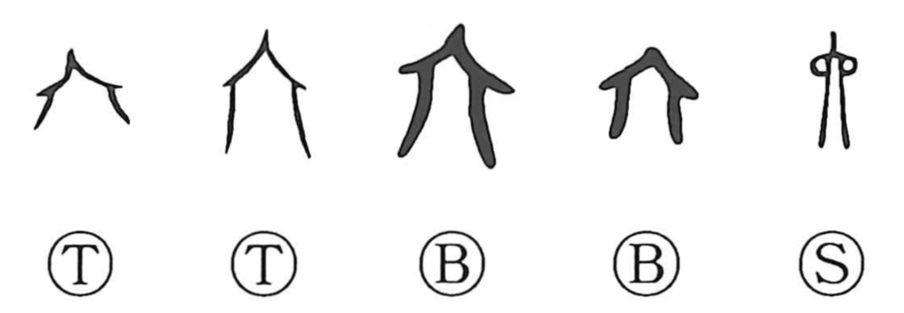

六

Kun: mutsu, mu, muttsu, mui | On: roku, riku
six ・ the number six
Explanation
六 originally pictures a small tent or temporary shelter. The early oracle-bone and bronze forms preserve its roofed outline more clearly than the later standardized shape.
Related 陸 and 陵 place such shelters at a sacred elevated site, before the stairway by which a deity ascends and descends. Repeated shelter forms in this family evoke the arrangements made to receive the divine presence.
The graph was borrowed for its sound to write the number six. In the Yijing, six also identifies yin lines, a specialized numerical use subsequent to the shelter-shaped sign.